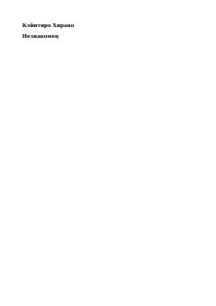

НYozuvchi va sirli huquqshunos o'rtasidagi kutilmagan tanishuv va shaxsiyat sirlari haqidagi roman.
Roman yozuvchi va sirli huquqshunos Akira Kido o'rtasidagi kutilmagan tanishuv haqida hikoya qiladi. Asar shaxsiyat, yolg'on va insoniy munosabatlarning murakkab qirralarini ochib beradi. Muallif o'z qahramonining hayotiy tajribasi orqali haqiqat va niqoblar o'rtasidagi nozik chegarani tadqiq etadi.